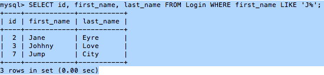

Modifying Selections - MySQL Relational Database
Modifying Selections
Previously I showed you how to create a database, select it, create a table and insert values into that table. Then I showed you how to query the data in that table and even the composition of the table itself. From here we can go a little deeper and modify our table to hold more information and choose what sort of data we want to select from it. There is one of two ways to make changes to our existing table, we can either drop it create it again with our new information and add our old values to our new columns. However, if we had already stored in the table we might want to just use the 'ALTER TABLE table_name' query to add our new column or our 'MODIFY column_name' to make changes to the column. However since we are just beginning to learn SQL let's just drop it and create it again.
Code:
DROP TABLE Login;
CREATE TABLE Login (
id INT UNSIGNED NOT NULL AUTO_INCREMENT PRIMARY KEY,
first_name VARCHAR (50) NOT NULL,
last_name VARCHAR (50) NOT NULL,
email VARCHAR (50) NOT NULL,
password VARCHAR (50) NOT NULL,
registration_date DATETIME NOT NULL
);
In this new version of our login table we created three additional fields increasing number of fields to a total of six. Furthermore we added a few additional attributes to each of our fields with the exception of two: phone_number and address.
- Unsigned: Ensures that there are no negative numbers which increasing the range of numbers which can be used (example: -10, 10 to 0, 20)
- Auto_Increment: Increases the number by one for every new value/record.
- Not Null: Ensures that the field will never be left empty, this is extremely important for fields like primary keys.
- Datetime: Provides a time stamp for when the record was created.
Alright, now that we have remade our table let's add some new data into our columns.
Code:
INSERT INTO Login VALUES
( NULL, 'Carlos', 'Boogie', 'Jc@june.com', SHA1('silly'), NOW());
INSERT INTO Login VALUES
( NULL, 'Jane', 'Eyre', 'Jack@june.com', SHA1('beans'), NOW());
INSERT INTO Login VALUES
( NULL, 'Johhny', 'Love', 'Jill@june.com', SHA1('funny'), NOW());
INSERT INTO Login VALUES
( NULL, 'Moon', 'Pie', 'John@june.com', SHA1('bounce'), NOW());
INSERT INTO Login VALUES
( NULL, 'Miss', 'Hannigan', 'Juniper@june.com', SHA1('games'), NOW());
INSERT INTO Login VALUES
( NULL, 'Double', 'Dragon', 'Jasper@june.com', SHA1('password'), NOW());
INSERT INTO Login VALUES
( NULL, 'Jump', 'City', 'Jason@june.com', SHA1('gucci'), NOW());
Image:
SELECT * FROM Login;
{kind=link}
The picture was slightly large so I just left a link for it above. As you can see my auto increment managed to provide a primary key for every entry, also I used two functions when creating records for my table.
- SHA1(): This function will encrypt the password so even if it is queried it will not be revealed.
- NOW(): Provides a time stamp.
Selecting certain Records
Now that we have a larger table with more data, I am going to try some other queries which will control which records get selected and/or which fields from those records are selected.
Suppose I only wanted to display users with the primary key of 1. I could type 'SELECT * FROM Login WHERE id = 1;'
SELECT * FROM Login WHERE id = 1;
Now let's suppose I want to just see the users first and last name only, 'SELECT first_name, last_name FROM Login WHERE id = 1;'.
The results of this query are going to be 1 user selected, the one with the primary key of 1 which is the first user we created 'Carlos, Boogie';
SELECT first_name, last_name FROM Login WHERE id = 1;
As long as I know the name of the field and the name of the table I can choose which data is selected and I find the name of the fields by using the 'SHOW COLUMNS FROM tablename;' query. Now let's take it one step further, how about if I want to select users which have the letter 'J' in their first name.
Code:
SELECT id, first_name, last_name FROM Login WHERE first_name LIKE 'J%';

Here we see 3 out of 7 users have a first name that begins with the letter 'J'.
Previous Page Next Page